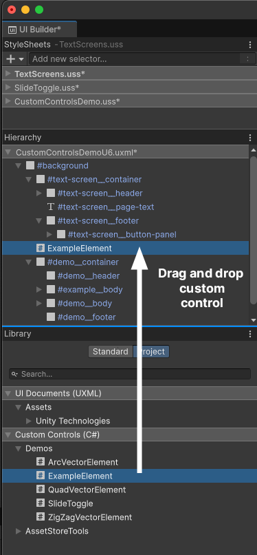
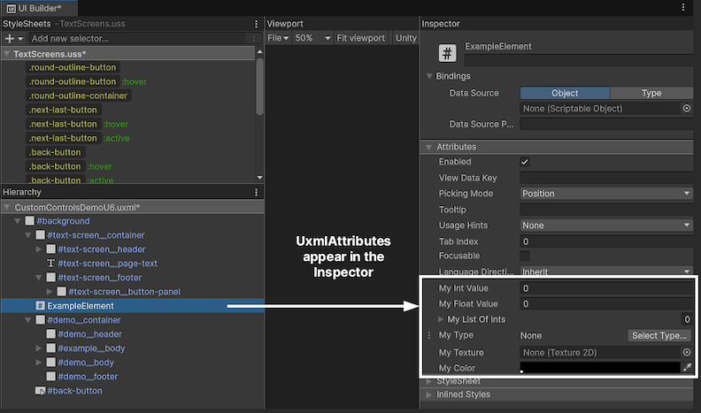
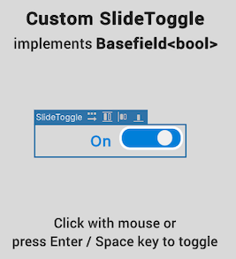
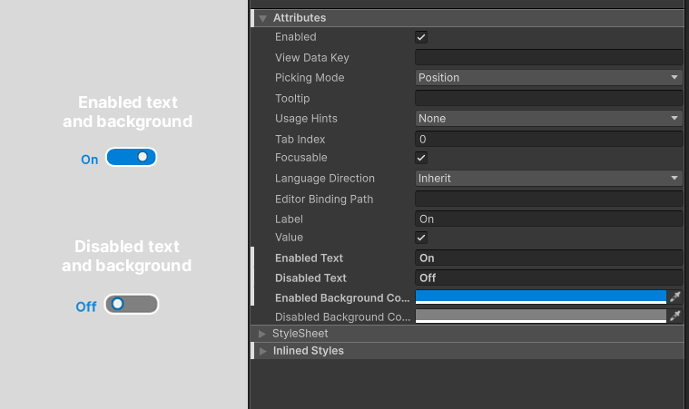
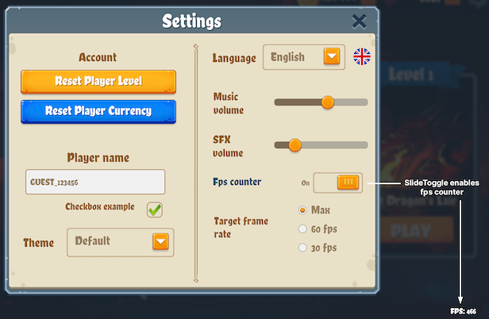

Table of Contents
UI Toolkit offers a standard set of elements for building interfaces, but you can also create custom controls tailored to your application’s needs.
For instance, a custom health bar could change color based on health value, animating from green to yellow and red as health decreases. It could be repurposed across characters without extra setup – or even used to represent other stats, like mana or power. This encapsulated control would offer a clear visual upgrade to the slider from the UI Toolkit standard library.
Custom controls let you encapsulate functionality into standalone elements, making them reusable across different parts of your interface. Well-designed controls are abstract, self-contained, and support code reuse, helping simplify project maintenance. When implementing custom controls, avoid using them with elements tied to specific components that lack standalone functionality (e.g., game menus).
To create a custom control, start by defining a new C# script that inherits from the VisualElement class – or a subclass that closely matches what you want to create. Want a button-like control? Just inherit from the Button class.
To make your custom control available in UXML and the UI Builder, add the UxmlElement attribute to your class. Ensure that the custom element is defined as a public partial class:
[UxmlElement]
public partial class ExampleElement: VisualElement
{
}
Your custom control will then appear in the Library section under the Custom Controls (C#) category in the UI Builder. You can then drag it into UI Builder’s Hierarchy window.

Note: Because visual elementsA node of a visual tree that instantiates or derives from the C# VisualElement class. You can style the look, define the behaviour, and display it on screen as part of the UI. More info
See in Glossary aren’t GameObjectsThe fundamental object in Unity scenes, which can represent characters, props, scenery, cameras, waypoints, and more. A GameObject’s functionality is defined by the Components attached to it. More info
See in Glossary, they don’t have the usual lifecycle events like Awake, OnEnable, OnDisable, and OnDestroy. Instead, you initialize a custom control using its constructor.
[UxmlElement]
public partial class ExampleElement: VisualElement
{
// Constructor
public ExampleElement()
{
// Initialization
}
}
You can also delay initialization until the custom control is added to the UI. To do this, register a callback for an AttachToPanelEvent.
To detect that your custom control has been removed from the UI, use the DetachFromPanelEvent callback.
Adding the UxmlAttribute attribute to a property makes it appear in the UI Builder’s InspectorA Unity window that displays information about the currently selected GameObject, asset or project settings, allowing you to inspect and edit the values. More info
See in Glossary window. This allows you to set initial values interactively. UxmlAttributes can be helpful when working with a designer, as changes in the Inspector don’t require modifying code.
Apply the UxmlAttribute attribute to each property you want to expose. You can also customize attribute names with the name argument.
Selecting the control in the Hierarchy will display your custom attributes in the Inspector window, allowing you to configure them directly.
Decorator attributes can modify your custom attribute fields much like working with MonoBehaviours. Useful decorator attributes include TextArea, Tooltip, Range, Header, Min, Multiline, Space, and Delayed. For example, using the Range attribute adds a slider for selecting values within a range.

Here’s a basic example of adding the UxmlElement attribute to a custom control, which includes two exposed properties using the UxmlAttribute attribute.
[UxmlElement]
public partial class ExampleElement: VisualElement
{
[UxmlAttribute(name:"my-text")]
public string myStringValue { get; set; }
[UxmlAttribute]
public int myIntValue { get; set; }
}
In this example, MyStringValue appears as “My Text” in the Inspector using the name parameter. Both MyStringValue and MyIntValue are editable in the Inspector whenever an instance of ExampleElement is selected in the Hierarchy.
Note: Before Unity 6, creating custom controls required implementing UxmlTraits and UxmlFactory classes, which handled attribute registration and object instantiation for custom elements.
Unity 6 simplifies custom element creation by introducing UxmlElement and UxmlAttribute attributes. These directly expose custom controls and properties in UXML and the UI Builder. This new workflow reduces the amount of boilerplate code and makes it faster to customize UI elements.
An example of a simple custom control could be a slide toggle, a switch-like element representing a boolean value.
This might offer a more engaging experience than a standard toggle. Adding extra visual feedback, such as an animated switch, changing color, and dynamic text, can result in a more intuitive UI.

In the QuizU project, you can find a simple implementation of this custom control in the CustomControlsDemo sceneA Scene contains the environments and menus of your game. Think of each unique Scene file as a unique level. In each Scene, you place your environments, obstacles, and decorations, essentially designing and building your game in pieces. More info
See in Glossary. Open the SlideToggle.cs script to see how it works (snippets shown below).
The slide toggle custom control inherits from the most suitable base class – BaseField<bool> in this case. The UxmlElement attribute exposes the control in UXML and the UI Builder, making it reusable.
[UxmlElement]
public partial class SlideToggle : BaseField<bool>
{
// …
[UxmlAttribute]
public string EnabledText { get; set; } = "Enabled";
[UxmlAttribute]
public string DisabledText { get; set; } = "Disabled";
[UxmlAttribute]
public Color EnabledBackgroundColor { get; set; } = new Color(0f, 0.5f, 0.85f,1f);
[UxmlAttribute]
public Color DisabledBackgroundColor { get; set; } = Color.gray;
}
The visual structure consists of a background (m_Input) and a knob (m_Knob), with USS classes defining the appearance.
public SlideToggle(string label) : base(label, new VisualElement())
{
AddToClassList(ussClassName);
m_Input = this.Q(className: BaseField<bool>.inputUssClassName);
m_Input.AddToClassList(inputUssClassName);
m_Input.name = "input";
m_Knob = new();
m_Knob.AddToClassList(inputKnobUssClassName);
m_Knob.name = "knob";
m_Input.Add(m_Knob);
labelElement.name = "label";
labelElement.text = (value) ? "enabled" : "disabled";
}
Event handling is implemented to respond to clicks, key presses, and navigation events. This allows multiple ways to change its state.
{
// …
RegisterCallback<ClickEvent>(evt => OnClick(evt));
RegisterCallback<KeyDownEvent>(evt => OnKeydownEvent(evt));
// …
}
static void OnClick(ClickEvent evt)
{
var slideToggle = evt.currentTarget as SlideToggle;
slideToggle.ToggleValue();
evt.StopPropagation();
}
static void OnKeydownEvent(KeyDownEvent evt)
{
var slideToggle = evt.currentTarget as SlideToggle;
if (slideToggle.panel?.contextType == ContextType.Player)
return;
if (evt.keyCode == KeyCode.KeypadEnter || evt.keyCode == KeyCode.Return || evt.keyCode == KeyCode.Space)
{
slideToggle.ToggleValue();
evt.StopPropagation();
}
}
The label and background color update automatically as the user toggles the switch, providing visual feedback.
Here we use SetValueWithoutNotify to update the visual state of the toggle without triggering a ChangeEvent. Since this method is called internally when the value changes, the UI updates correctly without causing an infinite loop of updates.
public override void SetValueWithoutNotify(bool newValue)
{
base.SetValueWithoutNotify(newValue);
m_Input.EnableInClassList(inputCheckedUssClassName, newValue);
m_Input.style.backgroundColor = newValue ? EnabledBackgroundColor : DisabledBackgroundColor;
labelElement.text = (value) ? EnabledText : DisabledText;
}
Explore the sample implementation in the CustomControlsDemo scene. Click the element with the mouse or press the Enter or Space key to toggle its active state. In this sample, the label and background color update dynamically as the user toggles the slide control, with a quick animation providing visual feedback.
Use the Inspector to set string labels and background colors that correspond to the enabled and disabled state.

Once compiled, the slide toggle is now ready to integrate into any part of your UI. Use the custom SlideToggle class just like any other visual element. Here’s an example implementation that uses the SlideToggle class to mute or unmute the sound:
// Example usage in a MonoBehaviour
public class MuteAudioToggle : MonoBehaviour
{
[SerializeField] AudioSettingsSO m_AudioSettingsSO;
[SerializeField] UIDocument m_Document;
void OnEnable()
{
var root = m_Document.rootVisualElement;
SlideToggle slideToggle = root.Q<SlideToggle>("master-audio-toggle");
if (slideToggle != null)
{
slideToggle.value = !m_AudioSettingsSO.IsMasterMuted;
slideToggle.RegisterValueChangedCallback(evt => m_AudioSettingsSO.IsMasterMuted =
!evt.newValue);
}
}
}
In this case, the SlideToggle is part of an existing UXML document. The MonoBehaviour locates it by name within the visual treeAn object graph, made of lightweight nodes, that holds all the elements in a window or panel. It defines every UI you build with the UI Toolkit.
See in Glossary and then uses the RegisterValueChangedCallback method to link the toggle state to the audio settings.
Since SlideToggle is a standalone custom element, you can use it for any kind of toggle switch in your UI. For example, in the UI Toolkit - Dragon Crashers sample, a similar SlideToggle enables and disables the fpsSee first person shooter, frames per second.
See in Glossary counter.

Customize the SlideToggle to fit your application’s requirements – it’s ideal for settings like visuals, sound, or gameplay options. Build it once, then reuse it wherever a custom switch can enhance the user experience.
For a full implementation, refer to the SlideToggle.cs script in the QuizU project.
If there’s a control that’s not included in the standard UI Toolkit library, you can create your own. Here are just a few examples to get you thinking about how you can deploy custom controls in your own games:
Health bars/progress bars: Game attributes like health, mana, power, etc. can vary widely based on gameplay, making them great candidates for custom controls. Expose UxmlAttributes like max value, current value, and status colors to add options for color gradients.
Rating stars: This control functions like a segmented progress bar, representing an integer value (e.g. stars for completing a level). Start with a visual element with several child elements that can switch between filled and unfilled states. Expose an int with a max value in the Inspector and allow the user to customize the spriteA 2D graphic objects. If you are used to working in 3D, Sprites are essentially just standard textures but there are special techniques for combining and managing sprite textures for efficiency and convenience during development. More info
See in Glossary images with UxmlAttributes.
Tab view control: A tabbed interface is a common UI for switching between different views or sections within the same window. Implement this by creating a custom element with a row of tabs and a content area. Each tab can be a button-like visual element, with options to add or remove tabs dynamically.
Remember that in most cases, you can also trigger USS transitions to add visual flair with animations. With custom controls, your users can pinch, click, scroll, and toggle through your unique game UIs.
We can’t wait to see what you make with them.